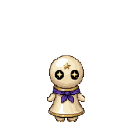
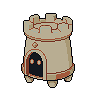
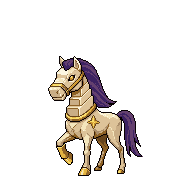
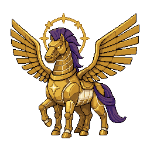

Pawnbound
In development · Pre-production
You hunt the secret society that murdered your father. Battles are turn-based but reactive: timed attacks, dodges and parries decide each exchange. Everything you own is a card. Pawns, capture seals and items all live in your deck, and your deck is your army. Every Pawn has a role that decides what it can do and an element that decides the effect it carries. The story deals with revenge, grief and complicity, and some deaths are permanent. The look is pixel sprites in small 3D worlds, with a dark, muted palette. Pawnbound is in pre-production, and we're building it for Windows first.
The Dex
Every monster's original illustration, with the pixel sprite you meet in the game in the corner, its element and its battle role (Fang, Maul, Tide, Aegis, Riposte or Hymn). 15 so far; more appear as the art team finishes them. Final evolutions are hidden: click the eye to see one.

A small ivory piece that rolls where it wants to go.

Its head has a chip from every wall it lost an argument with.

It has stopped rolling and started walking.

Gold closes over the ball like a helm.

The one piece that walked across the whole board and kept walking.

A little ivory tower with a dark doorway for a face.

Its stone is chipped where it has stood in the way.

The wall has grown into a shoulder of plates, and the doorway has narrowed to a barred brow.

Gold plate closes over the stone, and a great tower rises from its back.

A heavenly citadel on gold legs, with a star on its highest spire.

A little ivory chess piece that hops in an L and will not be talked out of it.

Its neck has grown long and its crest sweeps back like a flag.

The runner has become a warrior: broad in the chest, plated in gold, and never again cute.

Gold closes over the ivory like a suit of armour, and wide golden wings unfold from its shoulders.

A ring of gold stars stands behind its head, and its eyes burn like the first stars of the night.